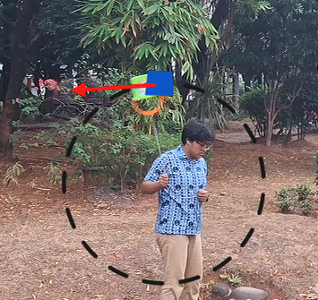
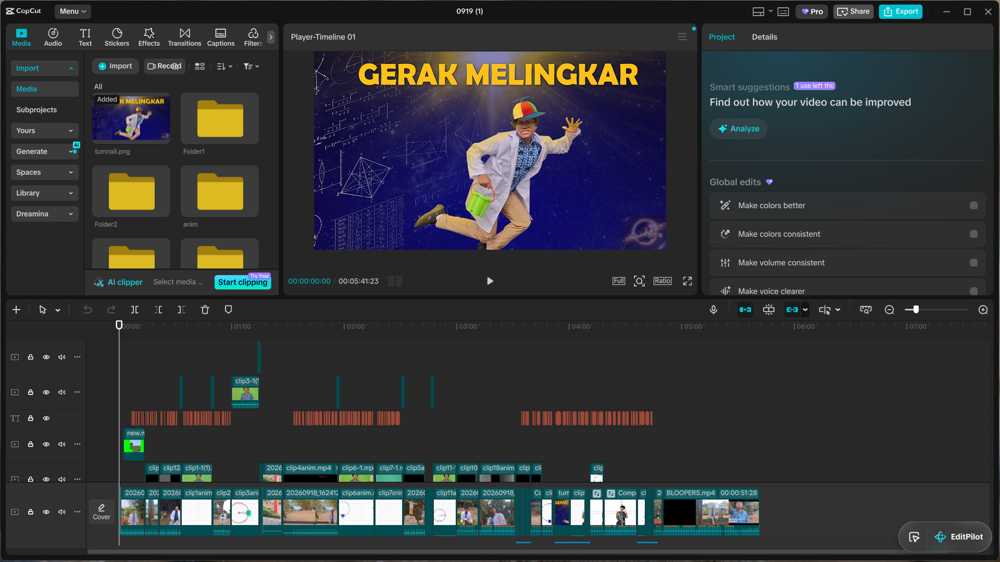

In physics, we learn about circular motion, which is the movement of an object on a circular path that revolves around a certain center.
An example of circular motion is when you spin a bucket filled with water connected with a string vertically. When the bucket is at the top, the water does not fall. Why is that?

In this project made an explanational video regarding circular motion while also explaining the phenomenon of spinning water in a bucket vertically.
I made the video along with two of my friends : Bosar and Justin
I think this project correlates with one of the seven habits of highly effective people.
Specifically, habit number 3; "Put First Things First" as I need to prioritize which part of the project need to be done first, especially to keep up with the deadline and also to integrate justin's part of the video, due to his late inclusion to the group.
